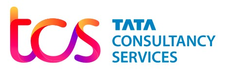
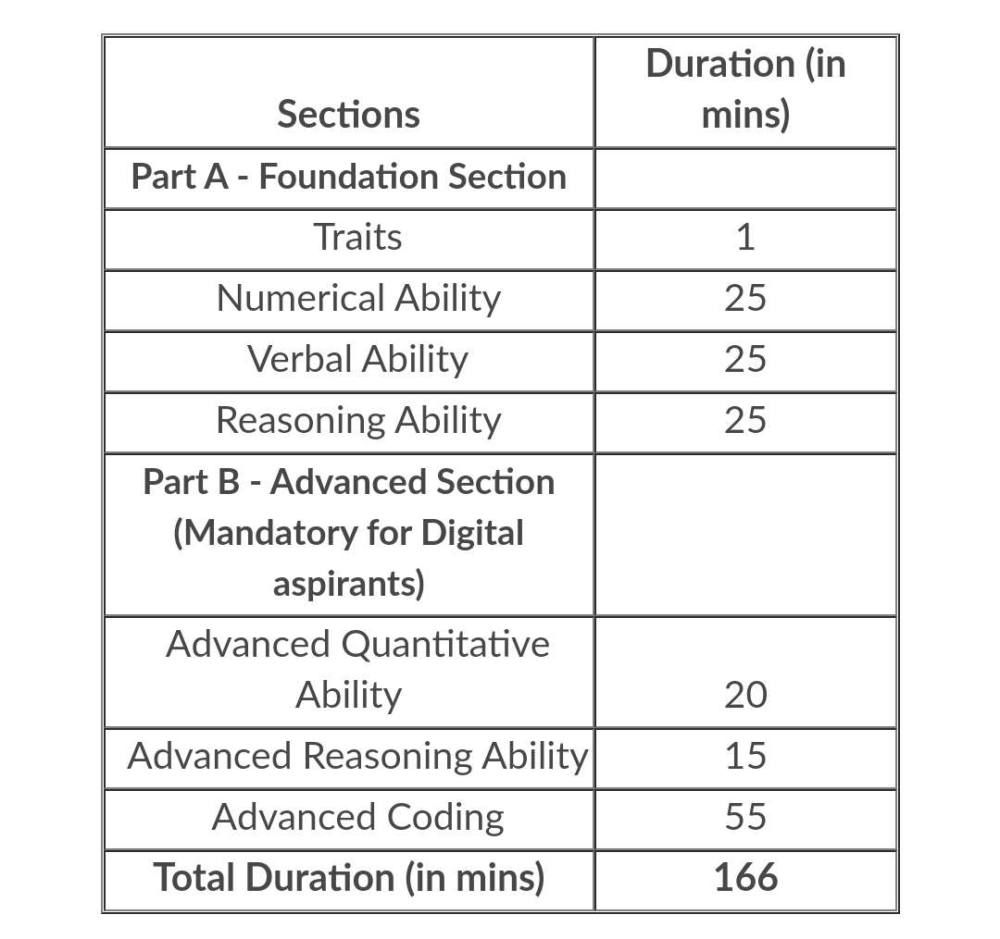

TCS Off Campus Drive | TCS Ninja Hiring | TCS Digital Recruitment 2022 | TCS Digital Salary |
TCS Ninja Salary | TCS Recruitment 2022 | TCS Digital Pattern | Freshers | Apply link |
Company Description: Tata Consultancy Services is a world wide leader in IT services,
consulting and business solutions with a large network of innovation and delivery centers.TCS is
the 2nd large Indian company by market capitalisation and it is the most valuable IT services
global brand.In 2015, TCS was ranked 64th overall in the ranking of Forbes World's Most
Innovative Companies making it worldwide top-ranked IT services company and the best Indian
company.

Educational Qualification:
TCS Off Campus Hiring for Year of pass out 2020, 2021
and 2022:
Percentage: Students must have minimum aggregate marks (Every subjects and in all
semesters) of 60% or 6 CGPA in each of Class Xth, Class XIIth, Diploma (if applicable),
Graduation and Post-Graduation examinations.
Highest Qualification: Students must complete their education within the course duration
(i.e. No extended education).
Backlogs: Students must not have any pending backlogs and arrears.
Gap in Education: It is mandatory to declare gaps in education, if there is any. Overall
academic gap should not exceed 2 years until highest qualification. Required document proof
will be checked for academics gaps in education.
Course Types: Only full-time courses will be considered (Part-time courses will not be
considered)Students who have completed their Secondary and if any Senior Secondary course
from National Institute of Open Schooling are also eligible to apply for the drive if the other
courses are full-time.
Work Experience: Freshers and who have work experience of up to 2 years are eligible to apply
for the drive.
Age: A student should be of 18 - 28 years of age to participate in the TCS Off Campus Hiring
process.
Degree : Students from B.E or B.Tech ,M.E or M.Tech/MCA/M.Sc from any branch offered by
a recognized university/college are eligible to apply.
TCS Ninja | TCS Digital test Pattern :

Salary: TCS Digital around 7 LPA
TCS Ninja around 3.36 LPA
Last date of registration : Friday, May 20th 2022
Apply Online: Click here for apply or for getting more details